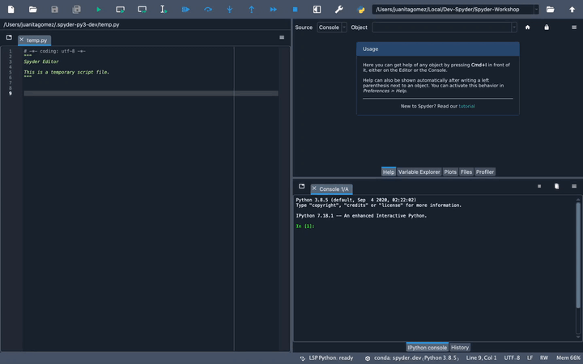
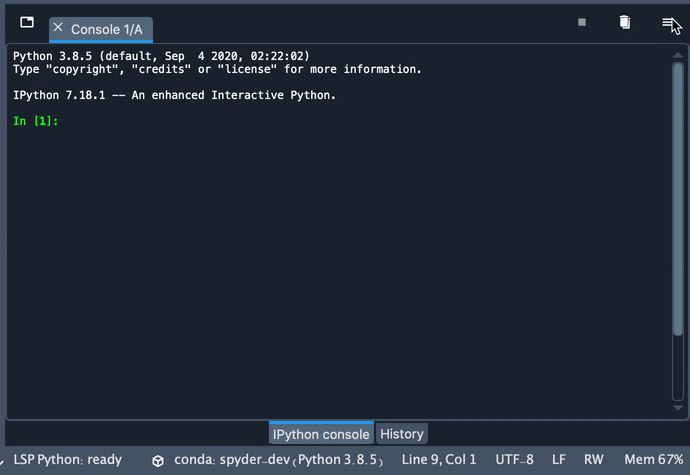
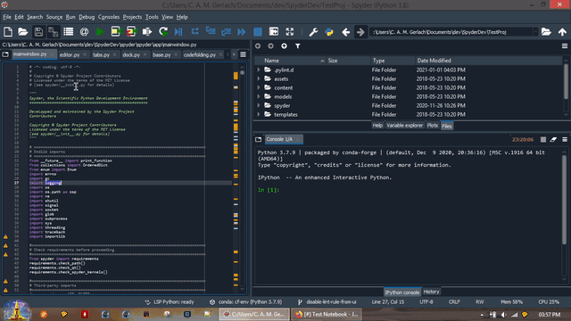
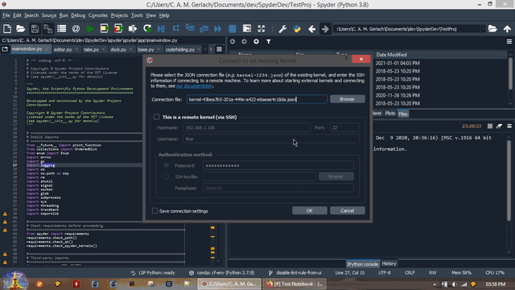
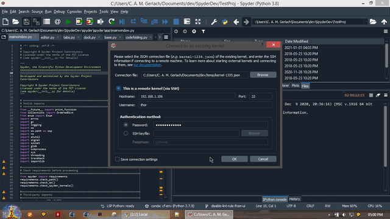
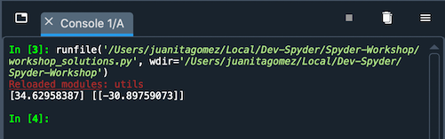

IPython Console#
The IPython Console allows you to execute commands and interact with data inside IPython interpreters.

To launch a new IPython instance, go to New console (default settings) under the Consoles menu, or use the keyboard shortcut Ctrl-T (Cmd-T on macOS) when the console is focused.
From the same menu, you can stop currently executing code with Interrupt kernel, clear a console’s namespace with Remove all variables, or relaunch a fresh one with Restart kernel. As each console is executed in a separate process, this won’t affect any others you’ve opened, and you will be able to easily test your code in a clean environment without disrupting your primary session.
Supported features#
Any IPython Console, whether external or started by Spyder, supports:
Automatic code completion
Real-time function calltips
Full GUI integration with the enhanced Spyder Debugger.
The Variable Explorer, with GUI-based editors for many built-in and third-party Python objects.
Display of Matplotlib graphics in Spyder’s Plots pane, if the Inline backend is selected under , and inline in the console if Mute inline plotting is unchecked under the Plots pane’s options menu.

For information on the features, commands and capabilities built into IPython itself, see the IPython documentation.
Special consoles#
Spyder also supports several types of specialized consoles. A Sympy console enables creating and displaying symbolic math expressions right inside Spyder. A Cython console allows you to use the Cython language to speed up your code and call C functions directly from Python. Finally, a Pylab console loads common Numpy and Matplotlib functions by default; while this is deprecated and strongly discouraged for new code, it can still be used if necessary for legacy scripts that need it.
Options menu#
The options menu allows you to inspect your current environment variables (Show environment variables), and the contents of your system’s PATH (Show sys.path contents).
In addition, you can have each console display how long it has been running with Show elapsed time.

You can also change the name of the current IPython console tab with the Rename tab option, or by simply double-clicking it.

Using external kernels#
You can connect to external local and remote kernels (including those managed by Jupyter Notebook or QtConsole) through the Connect to an existing kernel dialog under the Consoles menu.
For this feature to work, a compatible version of the spyder-kernels package must be installed in the environment or machine in which the external kernel is running.
Connect to a local kernel#
To connect to a local kernel that is already running (e.g. one started by Jupyter notebook),
Run
%connect_infoin the notebook or console you want to connect to, and copy the name of its kernel connection file, shown afterjupyter <app> --existing.
In Spyder, click Connect to an existing kernel from the Consoles menu, and paste the name of the Connection file from the previous step.
As a convenience, kernel ID numbers (e.g.
1234) entered in the connection file path field will be expanded to the full path of the file, i.e.jupyter/runtime/dir/path/kernal-id.json.Click OK to connect to the kernel.

Connect to a remote kernel#
To connect to a kernel on a remote machine,
Launch a Spyder kernel on the remote host if one is not already running, with
python -m spyder_kernels.console.
Copy the kernel’s connection file (
jupyter/runtime/dir/path/kernel-pid.json) to the machine you’re running Spyder on.You can get
jupyter/runtime/dir/pathby executingjupyter --runtime-dirin the same Python environment as the kernel. Usually, the connection file you are looking for will be one of the newest in this directory, corresponding to the time you started the external kernel.
Click Connect to an existing kernel from the Consoles menu, and browse for or enter the path to the connection file from the previous step.
As a convenience, kernel ID numbers (e.g.
1234) entered in the connection file path field will be expanded tojupyter/runtime/dir/path/kernal-id.jsonon your local machine, if you’ve copied the connection file there.
Check the This is a remote kernel (via SSH) box and enter the Hostname or IP address, username and port to connect to on the remote machine. Then, enter either
username’s password on the remote machine, or browse to an SSH keyfile (typically in the.sshdirectory in your home folder on the local machine, often calledid_rsaor similar) registered on it; only one is needed to connect. If you check Save connection settings, these details will be remembered and filled for you automatically next time you open the dialog.Note that Port is the port number on your remote machine that the SSH daemon (
sshd) is listening on, typically 22 unless you or your administrator has configured it otherwise.
Click OK to connect to the remote kernel

For more technical details about connecting to remote kernels, see the Connecting to a remote kernel page in the IPython Cookbook.
Reload changed modules#
When working in an interactive session, Python only loads a module from its source file once, the first time it is imported.
Spyder’s User Module Reloader (UMR) automatically reloads modules right in your existing IPython consoles whenever they are modified and re-imported. With the UMR enabled, you can test changes to your code without restarting the kernel.
UMR is enabled by default, and it will provide you with a red Reloaded modules: message in the console listing the files it has refreshed when it is activated.
If desired, you can turn it on or off, and prevent specific modules from being reloaded, under .